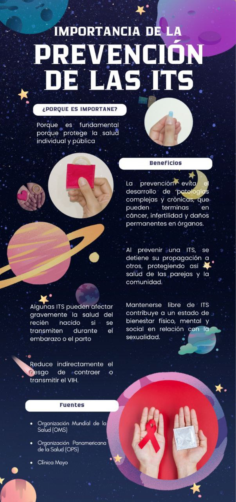

Las Infecciones de Transmisión Sexual (ITS) son un conjunto de enfermedades que se transmiten principalmente mediante el contacto sexual sin protección, ya sea vaginal, anal u oral. Están causadas por diversos agentes infecciosos como virus, bacterias, hongos o parásitos, que ingresan al organismo y se alojan principalmente en la zona genital, el recto, la boca o la sangre.
Una característica importante del concepto de ITS es que no siempre presentan síntomas, por lo que una persona puede tener una infección y transmitirla sin saberlo. Debido a esto, se consideran un problema de salud pública que requiere educación, prevención y diagnóstico temprano.
Estas infecciones no solo se transmiten por actividad sexual, también pueden contagiarse a través del intercambio de fluidos corporales, sangre contaminada, agujas compartidas o de madre a hijo durante el embarazo y el parto.
FUENTES: Organización mundial de la salud (OMS)
Porque protege la salud (mental y física) individual y pública
Fuentes:
1. Organización Mundial de la Salud (OMS)
2. Organización Panamericana de la Salud (OPS)
3. Clínica Mayo
El condón es importante porque actúa como una barrera que evita el contacto con fluidos que pueden transmitir ITS y también ayuda a prevenir embarazos no planificados. Su uso correcto reduce mucho el riesgo de contagio.
Ejemplo:
Si una pareja tiene relaciones sin condón y uno tiene ITS sin saberlo, los fluidos pueden contagiar al otro. En cambio, usando el condón desde el inicio hasta el final, ese contacto no ocurre y el riesgo disminuye.
Las ITS se transmiten principalmente cuando hay relaciones sexuales sin condón, ya sean vaginales, anales u orales, porque ocurre un contacto directo con fluidos como semen, flujo vaginal o sangre que pueden contener la infección.
Ejemplo:
Si una persona tiene sexo vaginal o anal sin condón con alguien que tiene una ITS, los fluidos pueden pasar directamente y contagiarla, incluso si no hay síntomas visibles
El uso correcto del preservativo es uno de los métodos más efectivos para prevenir ITS, porque crea una barrera que evita el contacto con fluidos que pueden transmitir infecciones. Debe colocarse desde el inicio de la relación sexual hasta el final de la relación sexual y usarse solo una vez.
Ejemplo:
Si una persona revisa la fecha, se coloca el condón antes de empezar y lo retira adecuadamente, reduce casi por completo el riesgo de contagio. En cambio, si lo coloca a la mitad del acto, ya hubo exposición y el riesgo aumenta.
Las pruebas periódicas de ITS permiten detectar infecciones a tiempo, incluso cuando no hay síntomas. Esto ayuda a iniciar tratamiento temprano y evitar contagiar a otras personas sin saberlo.
Ejemplo:
Una persona puede tener clamidia o sífilis sin presentar molestias; al hacerse una prueba anual, la infección se detecta y se trata antes de que avance o se siga transmitiendo.
Postergar el inicio sexual ayuda a reducir riesgos porque permite tener mayor madurez para decidir, usar protección correctamente y evitar exposiciones tempranas a ITS.
Ejemplo:
Un adolescente que espera tiene más tiempo para informarse y está menos expuesto a situaciones sin protección.
Completar el tratamiento de una ITS es esencial para eliminar completamente la infección y evitar complicaciones o contagios a otras personas.
Ejemplo:
Si una persona deja el tratamiento de sífilis o gonorrea a la mitad, la infección puede volver más fuerte y seguir contagiando a su pareja.
FUENTES:
Organización mundial de la salud (OMS)
La Centers for Disease Control and Prevention (CDC)
Es importante porque protege la salud individual y pública, evitando enfermedades graves como infertilidad, daños en órganos o complicaciones en el embarazo.
Puede transmitirse cuando el bebé pasa por el canal de parto y entra en contacto con virus o bacterias si la madre no recibió tratamiento adecuado.
La prevención evita enfermedades crónicas, detiene la propagación de infecciones y contribuye al bienestar físico, mental y social.
Significa que al usar protección se reduce el riesgo de contagios, permitiendo vivir la sexualidad con más seguridad, tranquilidad y responsabilidad.
Algunas medidas son: usar preservativo, realizarse pruebas, no compartir objetos punzantes y que las personas con VIH sigan su tratamiento para mantener el virus controlado.
Puede causar infecciones graves, problemas respiratorios, afectación ocular u otras complicaciones si no se detecta y se trata a tiempo
En el Perú puedes hacerte pruebas de ITS o buscar ayuda en cualquier centro de salud u hospital del Minsa, donde suelen ser gratuitas o muy económicas. También puedes llamar al 113 para que te indiquen el lugar más cercano. Las DIRIS y DIRESA de cada región realizan pruebas rápidas de VIH y sífilis. Si tienes ESSALUD, puedes pedirlas mediante consulta médica. Además, ONGs como AHF Perú e INPPARES ofrecen pruebas, consejería y campañas. Si hubiera una urgencia, el SAMU atiende al 106.
Afiche informativo sobre ITS
Haz clic en la imagen para verla más grande